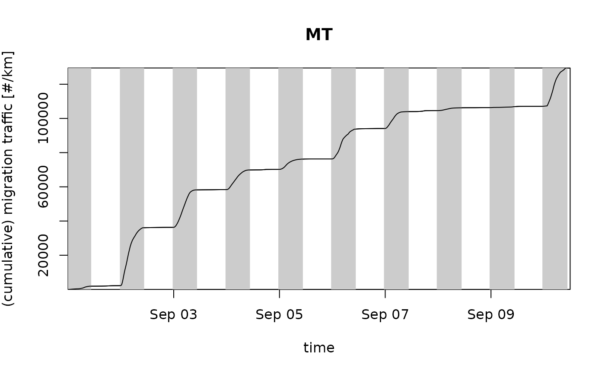

Vertically integrate profiles (vp or vpts) to an
integrated profile (vpi)
Source: R/integrate_profile.R
integrate_profile.RdPerforms a vertical integration of density, reflectivity and migration traffic rate, and a vertical averaging of ground speed and direction weighted by density.
integrate_profile(x, alt_min, alt_max, alpha = NA, interval_max = Inf) # S3 method for vp integrate_profile( x, alt_min = 0, alt_max = Inf, alpha = NA, interval_max = Inf ) # S3 method for list integrate_profile( x, alt_min = 0, alt_max = Inf, alpha = NA, interval_max = Inf ) # S3 method for vpts integrate_profile( x, alt_min = 0, alt_max = Inf, alpha = NA, interval_max = Inf )
Arguments
| x | A |
|---|---|
| alt_min | Minimum altitude in m. |
| alt_max | Maximum altitude in m. |
| alpha | Migratory direction in clockwise degrees from north. |
| interval_max | Maximum time interval belonging to a single profile in
seconds. Traffic rates are set to zero at times |
Value
an object of class vpi, a data frame with vertically
integrated profile quantities
Details
Available quantities
The function generates a specially classed data frame with the following quantities:
datetimePOSIXct date of each profile in UTC
vidVertically Integrated Density in individuals/km^2.
vidis a surface density, whereasdensinvpobjects is a volume density.virVertically Integrated Reflectivity in cm^2/km^2
mtrMigration Traffic Rate in individuals/km/h
rtrReflectivity Traffic Rate in cm^2/km/h
mtMigration Traffic in individuals/km, cumulated from the start of the time series up to
datetimertReflectivity Traffic in cm^2/km, cumulated from the start of the time series up to
datetimeffHorizontal ground speed in m/s
ddDirection of the horizontal ground speed in degrees
uGround speed component west to east in m/s
vGround speed component south to north in m/s
heightMean flight height (height weighted by eta) in m above sea level
Vertically integrated density and reflectivity are related according to \(vid=vir/rcs(x)\), with rcs the assumed radar cross section per individual. Similarly, migration traffic rate and reflectivity traffic rate are related according to \(mtr=rtr/rcs(x)\)
Ground speed (ff) and ground speed components (u,v)
The height-averaged ground speed is defined as:
$$ff = \sum_i dens_i ff_i / \sum_i dens_i$$
with the sum running over all altitude layers between alt_min and
alt_max, \(dens_i\) the bird density, \(ff_i\) the ground speed at
altitude layer i.
the height-averaged u component (west to east) is defined as:
$$u = \sum_i dens_i u_i / \sum_i dens_i$$
the height-averaged v component (south to north) is defined as:
$$v = \sum_i dens_i v_i / \sum_i dens_i$$
Note that \(ff_i=\sqrt(u_i^2 + v_i^2)\), but the same does not hold for the height-integrated speeds, i.e. \(ff != \sqrt(u^2 + v^2)\) as soon as the ground speed directions vary with altitude.
Migration traffic rate (mtr) and reflectivity traffic rate (rtr)
Migration traffic rate (mtr) for an altitude layer is a flux measure, defined as the number of targets crossing a unit of transect per hour.
Column mtr of the output dataframe gives migration traffic rates in individuals/km/hour.
The transect direction is set by the angle alpha. When
alpha=NA, the transect runs perpendicular to the measured migratory
direction. mtr then equals the number of crossing targets per km
transect per hour, for a transect kept perpendicular to the measured
migratory movement at all times and altitudes. In this case mtr is
always a positive quantity, defined as:
$$mtr = 3.6 \sum_i dens_i ff_i \Delta h$$
with the sum running over all altitude layers between alt_min and
alt_max, \(dens_i\) the bird density, \(ff_i\) the ground speed at
altitude layer i, and \(\Delta h\) the altitude layer width. The factor 3.6
refers to a unit conversion of speeds \(ff_i\) from m/s to km/h.
If alpha is given a numeric value, the transect is taken perpendicular
to the direction alpha, and the number of crossing targets per hour
per km transect is calculated as:
$$mtr = 3.6 \sum_i dens_i ff_i \cos((dd_i-alpha) pi/180) \Delta h$$ with \(dd_i\) the migratory direction at altitude i.
Note that this equation evaluates to the previous equation when alpha equals \(dd_i\).
Also note we can rewrite this equation using trigonometry as:
$$mtr = 3.6 \sum_i dens_i (u_i \sin(alpha pi/180) + v_i \cos(alpha pi/180)) \Delta h$$ with \(u_i\) and \(v_i\) the u and v ground speed components at altitude i.
In this definition mtr is a traditional flux into a direction of
interest. Targets moving into the direction alpha contribute
positively to mtr, while targets moving in the opposite direction
contribute negatively to mtr. Therefore mtr can be both
positive or negative, depending on the definition of alpha.
Note that mtr for a given value of alpha can also be calculated from
the vertically integrated density vid and the height-integrated velocity
components u and v as follows:
$$mtr = 3.6 (u \sin(alpha pi/180) + v \cos(alpha pi/180)) vid$$
Formula for reflectivity traffic rate rtr are found by replacing
dens with eta and vid with vir in the formula for mtr.
Reflectivity traffic rate gives the cross-sectional area
passing the radar per km transect perpendicular to the migratory direction per hour.
mtr values are conditional on settings of rcs, while rtr values are not.
Migration traffic (mt) and reflectivity traffic (rt)
Migration traffic is calculated by time-integration of migration traffic rates. Migration traffic gives the number of individuals that have passed per km perpendicular to the migratory direction at the position of the radar for the full period of the time series within the specified altitude band.
Reflectivity traffic is calculated by time-integration of reflectivity traffic rates. Reflectivity traffic gives the total cross-sectional area that has passed per km perpendicular to the migratory direction at the position of the radar for the full period of the time series within the specified altitude band.
mt values are conditional on settings of rcs, while rt values are not.
Columns mt and rt in the output dataframe provides migration traffic as a numeric value equal to migration traffic and reflectivity traffic from the start of the time series up till the moment of the time stamp of the respective row.
Methods (by class)
vp: Vertically integrate a vertical profile.list: Vertically integrate a list of vertical profiles.vpts: Vertically integrate a time series of vertical profiles.
Examples
# MTR for a single vertical profile integrate_profile(example_vp)#> radar datetime mtr vid vir rtr mt rt ff #> 1 seang 2015-10-18 18:00:00 4108.289 89.08468 983.9208 45191.18 NA NA 12.81019 #> dd u v height #> 1 204.4764 -5.298934 -11.64013 845.6075#> radar datetime mtr vid vir rtr mt rt ff #> 1 seang 2015-10-18 18:00:00 4108.289 89.08468 983.9208 45191.18 NA NA 12.81019 #> 2 seang 2015-10-18 18:00:00 4108.289 89.08468 983.9208 45191.18 NA NA 12.81019 #> dd u v height #> 1 204.4764 -5.298934 -11.64013 845.6075 #> 2 204.4764 -5.298934 -11.64013 845.6075#> Irregular time series of vertical profiles (class vpts) #> #> radar: KBGM #> # profiles: 1934 #> time range (UTC): 2016-09-01 00:02:00 - 2016-09-10 11:56:00 #> time step (s): min: 180 max: 16320# print migration traffic rates vpi <- integrate_profile(example_vpts) # plot migration traffic rates for the full air column plot(example_vpts)#> Warning: Irregular time-series: missing profiles will not be visible.Use 'regularize_vpts' to make time series regular.# plot migration traffic rates for altitudes > 1 km above sea level plot(integrate_profile(example_vpts, alt_min = 1000))